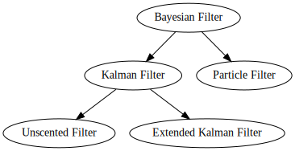

The notebooks use python3 with the following additions
| Package | Link |
|---|---|
| param | https://ioam.github.io/param/ |
| paramnb | https://github.com/ioam/paramnb |
| holoviews | https://github.com/ioam/holoviews |
| scipy stack | https://www.scipy.org/install.html |
The notebooks are based on the following reference: Kalman and Bayesian Filters in Python
